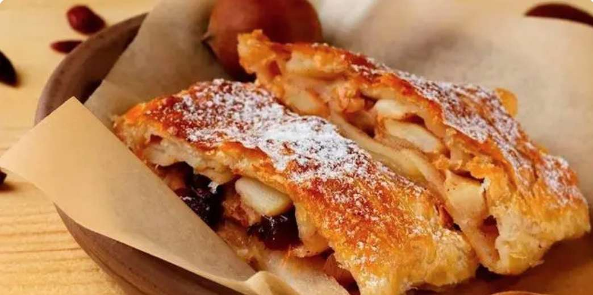
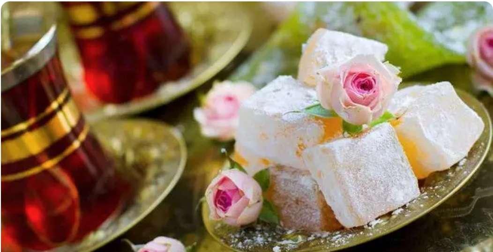
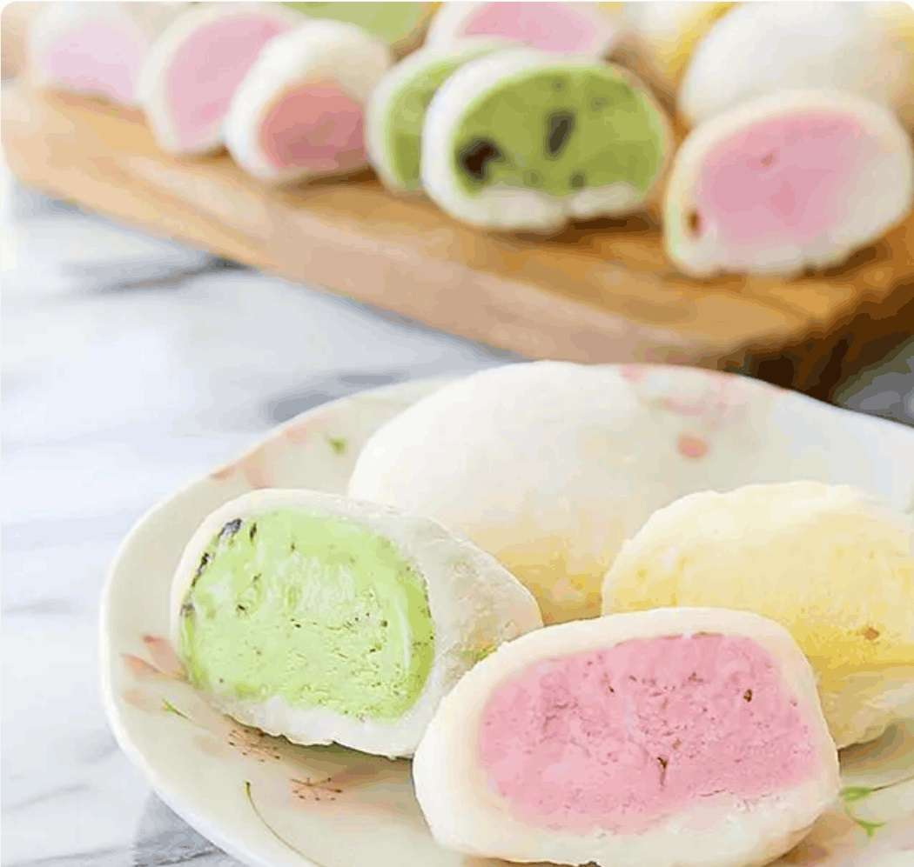

Apfelstrudel
This Apple Strudel recipe (Apfelstrudel in German) is easier than it seems and so much fun to make.
And the resulting strudel is a delicious, festive dessert just like the ones you would get in Austria or Germany filled with sweet,
spiced apples and raisins in a flaky crust that everyone will love!
Fènglísū

Pineapple cake is one of the most popular desserts and souvenirs in Taiwan, China, China.
A cake is composed of a butter like, fragile outer shell filled with a sweet pineapple jam.
The name of this dish comes from f è ng l í, which means pineapple, s ū, which means puff pastry.
Lokum
Turkey's favorite is a soft candy mixed with ordinary jelly and pistachios.
Türkiye families usually provide these cube fudge, tea and coffee after breakfast, lunch and dinner.
The original formula was corn flour, refined beet sugar, honey and water.
Mochi
Small cakes made from glutinous rice are an important part of Japanese cuisine and culture.
Crush cooked or steamed rice (usually glutinous rice) until a viscous and uniform paste is formed.
Later, it was rolled into small circular cakes. It may have originated in China and later spread to Japan, first appearing during the Yayoi period when only nobles could enjoy it.
Knedlíky

This is a traditional Eastern European delicacy, similar to Mantou, also known locally as dumplings, which is made of various materials.
Sweet dumplings are filled with fruits, usually made into rolls, cooked or steamed, and then sliced for consumption.
They can also be fortified with smoked meat, different herbs, or diced onions to enhance their nutrition.